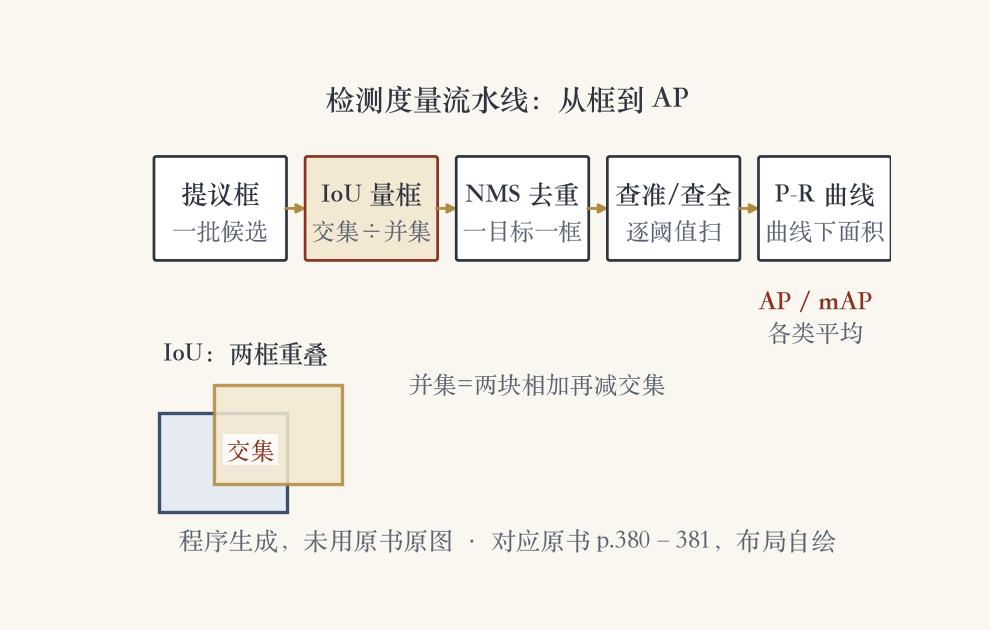
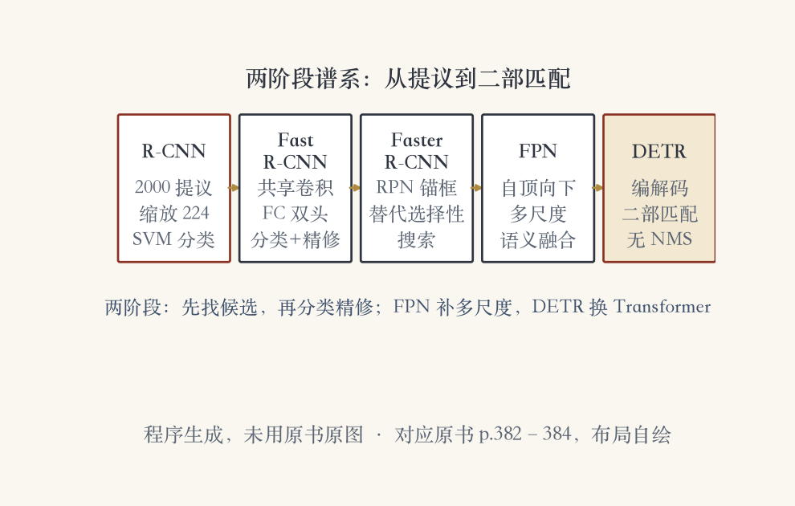
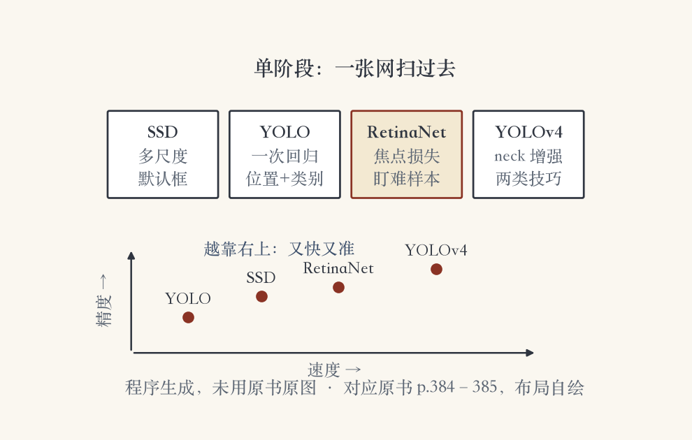

第 6 章 · 通用对象检测
不只分类，还要框出来
上一集讲行人检测，这一集看通用检测。
目标是任意类别的物体，不只是脸或人。
PASCAL VOC 设二十类，分类和检测双赛道。
分类说有什么，检测还要说在哪、多大。
依据：原书第 379 页
两个任务
分类：图里有什么
检测：在哪、有多大
检测还要把类别标对
正课第五十三集
01 / 16
VOC 时代 · 早期方法
手工特征加分类器
2007：Chum 与 Zisserman 的特征检测器。
2008：Felzenszwalb 的星形可变形部件模型。
2008：Lampert 的滑窗 SVM。
2012 前两名仍是 SPM SVM 与牛津 DPM。
依据：原书第 379 页
早期三件套
特征检测 + 空间金字塔 SVM
星形拓扑可变形部件
滑窗 SVM
正课第五十三集
02 / 16
数据集升级
VOC 到 ILSVRC 与 COCO
ILSVRC 2010：2 万张扩到 140 万张。
类别从 20 类扩到 1000 类。
COCO 每图物体更多，还带像素级分割。
表 6.2 列出常用训练与测试数据集。
依据：原书第 379 页
三个数据集
VOC：20 类，分类 + 检测
ILSVRC：140 万图，1000 类
COCO：更多物体 + 分割
正课第五十三集
03 / 16
度量一 · 交并比
量框准不准：IoU
IoU 等于交集面积除以并集面积。
也叫 Jaccard 指数或 Jaccard 相似系数。
两框重合越多，IoU 越接近 1。
框太大或太小都会拉低分数。
依据：原书第 380–381 页

检测度量流水线：IoU→置信度排序→NMS→查准率/查全率→P-R 曲线→AP/mAP｜程序生成，未用教材或论文原图
正课第五十三集
04 / 16
度量二 · 去重复
一个目标只留一个框
先提出一批可能的长方形区域。
每个区域分类并打置信度。
NMS 按置信度从高到低贪心。
重叠太多的弱检测被删掉。
依据：原书第 380 页
NMS
先提议，再分类
按置信度排序
重叠太高就删弱框
正课第五十三集
05 / 16
度量三 · 查准与查全
两个指标互相拉扯
检测按置信度从高到低排序。
类别对且 IoU 够高，算真阳性。
查准率 = TP / (TP + FP)。
查全率 = TP / P，P 是真值总数。
依据：原书第 381 页
阈值的影响
阈值放松：报得更多
查全率上去，查准率下来
阈值收紧就反过来
正课第五十三集
06 / 16
度量四 · AP 与 mAP
曲线下面积：AP 与 mAP
P-R 曲线下的面积叫平均精度 AP。
每个类别算 AP，再平均就是 mAP。
VOC 只用一个 IoU 阈值 0.5。
COCO 在 0.50 到 0.95 上平均。
依据：原书第 381 页
还有这些
PDQ：基于概率
Smooth-AP：更平滑
F 分数：查准查全的调和平均
正课第五十三集
07 / 16
两阶段 · R-CNN
剪两千个区域再辨认
selective search 抽约两千个区域提议。
每个区域缩放到 224 见方。
送进 AlexNet 或 VGG 提特征。
最后用 SVM 分类。
依据：原书第 382 页
三步
提议：约 2000 个区域
缩放：224 见方
分类：CNN + SVM
正课第五十三集
08 / 16
两阶段 · Fast R-CNN
卷积只算一遍
把卷积网络和区域提取的顺序对调。
用全连接层替掉 SVM。
一个头既分类，又精修框。
卷积只算一遍，训练测试都快得多。
依据：原书第 382 页
共享骨干
共享卷积特征
两个头：分类 + 精修
两个损失一起训练
正课第五十三集
09 / 16
两阶段谱系 · Faster 到 DETR
从提议到 RPN 到 DETR
Faster R-CNN 用 RPN 替掉 selective search。
RPN 在每处粗位置提出多个锚框。
DETR 去掉 NMS 和锚框生成。
ResNet 接 Transformer，输出固定数量框。
依据：原书第 382–384 页

两阶段检测器谱系：R-CNN→Fast R-CNN→Faster R-CNN（RPN 锚框）→FPN 多尺度→DETR 二部匹配｜程序生成，未用教材或论文原图
正课第五十三集
10 / 16
两阶段 · 多尺度
FPN 把高层语义灌回低层
三个 R-CNN 都只用单分辨率特征图。
图像金字塔逐层算特征太贵。
网络内层的语义深浅不一样。
FPN 用自顶向下连接融合多层。
依据：原书第 383 页
效果
高层语义 + 低层细节
检测明显更强
对物体尺寸没那么敏感
正课第五十三集
11 / 16
两阶段 · DETR
不要 NMS 和锚框
真值框用「无物体」补齐到同样数量。
训练时用二部匹配做一对一配对。
选总代价最低的配法。
总损失是配对框之间的损失和。
依据：原书第 383–384 页
输出
固定数量的一批框
有些框可以是「无物体」
COCO 上有竞争力
正课第五十三集
12 / 16
单阶段 · 路线
一眼扫过去全报出来
一个网络直接在多个位置输出检测。
不再分提议和分类两个网络。
代表是 SSD 和 YOLO 家族。
YOLO 的意思就是「你只看一次」。
依据：原书第 384 页
两条路线
两阶段：先提议再分类，稳但慢
单阶段：一次输出，快
单阶段更容易漏小目标
正课第五十三集
13 / 16
单阶段演进 · RetinaNet 与 YOLOv4
焦点损失与 YOLOv4
RetinaNet 建在特征金字塔上。
焦点损失压低简单样本的权重。
训练盯住难样本，不被负样本淹没。
YOLOv4 速度超过 EfficientDet。
依据：原书第 384–385 页

单阶段检测器对照：SSD/YOLO/RetinaNet（焦点损失）/YOLOv4（neck+免费礼包/特殊礼包）速度-精度示意｜程序生成，未用教材或论文原图
正课第五十三集
14 / 16
生态 · 数据集与工具
数据集和工具箱都齐了
多数框检测器还在 COCO 上评测。
Open Images、LVIS 也用起来了。
研讨会设实例、全景、关键点、密集姿态挑战。
开源框架有 TensorFlow OD API 和 Detectron2。
依据：原书第 385–386 页
表 6.2
分类、检测、定位图像库
原书第 386 页一张总表
原表不复制
正课第五十三集
15 / 16
收束 · 下一集
先框准再标对
度量链：IoU 量框、NMS 去重、AP 量整体。
两阶段：R-CNN 三代加 FPN 和 DETR。
单阶段：SSD、YOLO、RetinaNet、YOLOv4。
下一集：语义分割，给每个像素贴类别。
依据：原书第 379–386 页
怎么选
要稳：两阶段
要快：单阶段
要端到端简洁：DETR
正课第五十三集
16 / 16